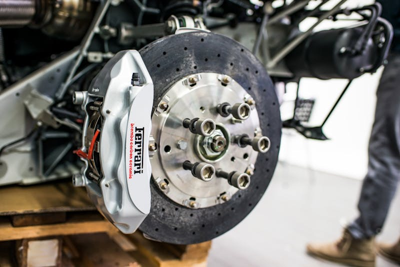

Brake Service & Repair
Your brakes are your most important safety system — trust them to experts.
Complete Brake Repair in Cedar Rapids
Squealing, grinding, or a soft brake pedal? Don't wait — brake problems only get worse and more expensive the longer you put them off. Cedar Automotive provides complete brake service for cars, trucks, and SUVs in Cedar Rapids and Eastern Iowa. We inspect every component of your braking system, explain exactly what needs attention, and get you back on the road safely.
We stock quality brake pads and rotors for domestic, Asian, and European vehicles. Whether you drive a Ford F-150 or a BMW 3 Series, we have the parts and expertise to handle it. Our brake service includes a thorough inspection so you know the full picture — not just the quick fix.
Iowa winters are tough on brakes. Road salt, moisture, and temperature swings accelerate wear on rotors and brake lines. Regular brake inspections at Cedar Automotive can catch small issues before they become costly repairs — or worse, a safety hazard.
Our Brake Services Include
- Brake pad replacement (ceramic, semi-metallic, organic)
- Rotor resurfacing and replacement
- Caliper repair and replacement
- Brake fluid flush and bleeding
- Brake line and hose inspection
- ABS system diagnostics
- Parking brake adjustment and repair
- Brake noise diagnosis and correction
- European vehicle brake specialists (BMW, Audi, Mercedes, Volvo)

Why Trust Us With Your Brakes?
Full Inspection
We inspect your entire brake system — not just the part that's making noise. You get the complete picture.
Fair Pricing
Quality brake parts at honest prices. We never upsell components that don't need replacing.
Safety First
Your family's safety is our priority. We never cut corners on brake work — every job is done right.
Related Services
Frequently Asked Questions
How do I know if I need new brakes?
Common signs include squealing or grinding noises when braking, a vibrating brake pedal, the car pulling to one side, or a longer stopping distance. If your brake warning light is on, come in right away.
How long do brake pads last?
Brake pad life varies by driving habits and vehicle, but most pads last between 30,000 and 70,000 miles. We inspect your brakes during every service visit to catch wear early.
Do you service brakes on European vehicles?
Absolutely. We carry the specialized tools and parts needed for BMW, Audi, Mercedes-Benz, and Volvo brake systems, including electronic parking brake service.